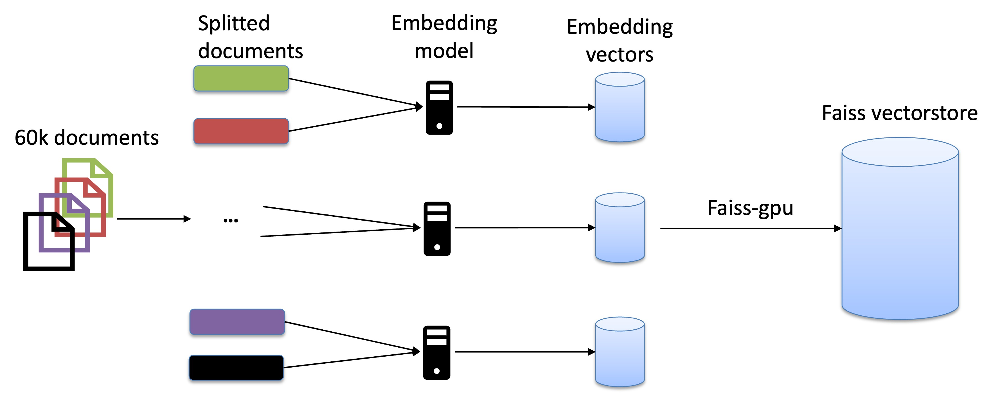

RAG-60K

Introduction to RAG
Retrieval-Augmented Generation (RAG) is a powerful technique that enhances language models by incorporating external knowledge retrieval. Instead of relying solely on pre-trained knowledge, RAG fetches relevant information from a document store or a vector database, improving response accuracy and reducing hallucinations. This approach is particularly beneficial for applications like question-answering, summarization, and chatbot development, where real-time and up-to-date information is crucial. RAG has gained popularity because it effectively bridges the gap between retrieval-based and generative models. It allows models to provide factually accurate answers without the need for frequent retraining. Additionally, RAG enhances interpretability, as users can trace responses back to retrieved documents.
Motivation of RAG-60K
Several frameworks have emerged to streamline the implementation of RAG pipelines, including LangChain and LlamaIndex. While both offer great abstraction layers, they face limitations when scaling to massive datasets.
Most scalable solutions available today require paid services, such as RAY—a distributed computing framework that enables large-scale parallel processing for RAG, but comes with infrastructure costs—and commercial vector stores. Many paid solutions (e.g., Pinecone, Weaviate, and AWS OpenSearch) offer scalability but at the cost of vendor lock-in and high operational expenses.
This repository provides an alternative method to implement a scalable RAG pipeline from scratch by leveraging PyTorch Distributed Data Parallel (DDP) for efficient parallel processing across multiple GPUs and FAISS-GPU, which utilizes Facebook AI Similarity Search (FAISS) with GPU acceleration to perform efficient nearest neighbor search at scale. The figure above illustrates the complete workflow of our approach, highlighting how we distribute data and efficiently build the FAISS vector store.
Usage
Generate embedding vectors
sbatch run_ingest.sh
Merge the embedding vectors to faiss vector store
sbatch run_merge.sh
Retrieval
During the retrieval process, we use 1 gpu interactively
srun --account=project_462000824 --partition=small-g --ntasks=1 --cpus-per-task=7 --gpus-per-node=1 --mem=60G --time=00:30:00 --nodes=1 --pty bash module purge module use /appl/local/csc/modulefiles module load pytorch source /scratch/project_462000824/rag_venv/bin/activate export PYTHONPATH=$PYTHONPATH:/scratch/project_462000824/rag_venv/lib/python3.10/site-packages python retriever_faiss.py
Notes
- CSC modulefiles and CSC preinstalled pytorch cover most of the libraries needed to run the codes in this project, except langchain library. One can set up their own environment and install langchain and other libraries if needed.
- faiss can do more than retrieving one query, with the multiple gpu support, it can handle tens of thousands of queries like stated in this website.
License
MIT License